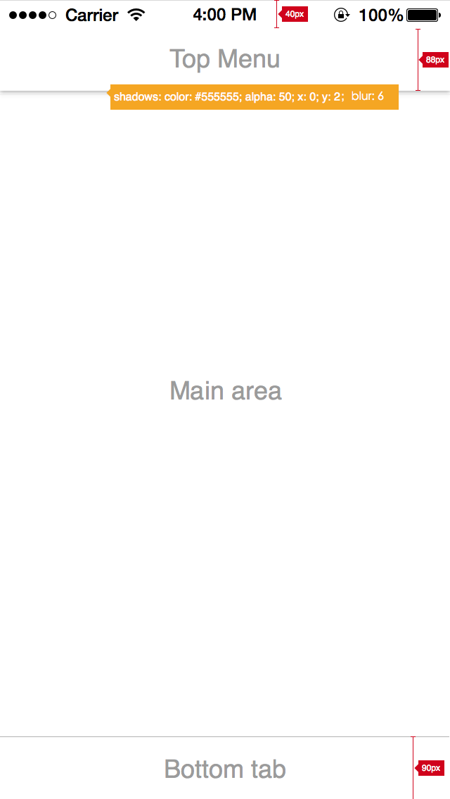

整体布局产品需求文档
1 概述
日程管家的页面主要分为三部分：Top Menu, Main area 和 bottom tab
2 整体布局介绍

- 应用一共又两类布局:主页面布局和子页面布局
- 主页面
- tap menu: 高度为88px，下方又阴影，阴影属性如图中标注所示
- Main area: 显示主要内容，背景为#ffffff
- Bottom tab: 底部菜单栏，切换不同功能，高度为90px，背景为#ffffff。顶部横线:#000000 透明度:30% 线粗:1px
- 应用场景：日历视图，消息列表
- 子页面没有Bottom tab，应用场景为：添加日程，设置等页面